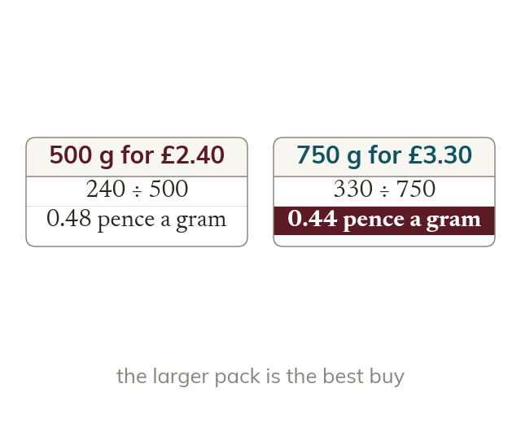

Comparing fairly
A unit cost makes different pack sizes comparable. The best buy has the lowest cost per unit.
A unit cost makes different pack sizes comparable, so the best buy is the lowest cost per unit. An exchange rate is a direct proportion, so it works the same way in both directions.